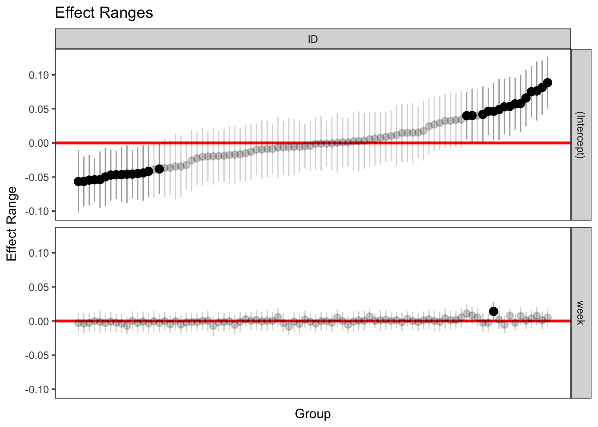

Chapter 3 Growth curves
3.1 Between person models and cross sectional data
You already know this, but it gives us a chance to review regression
\[ {Y}_{i} = b_{0} + b_{1}X_{1} + b_{2}X_{2} + b_{3}X_{3}+... +\epsilon_{i} \]
\[ \hat{Y}_{i} = b_{0} + b_{1}X_{1} + b_{2}X_{2} + b_{3}X_{3}+... \]
Parameters are considered fixed where one regression value corresponds to everyone. I.e., that association between X1 and Y is the same for everyone.
Each person has a Y, denoted by the subscript i, and each has a residual associated with them, also designated by i.
library(readr,)
example <- read_csv("~/Box Sync/5165 Applied Longitudinal Data Analysis/Longitudinal/example.csv")
example$ID <- as.factor(example$ID)Lets look at some data
library(tidyverse)
library(ggplot2)
gg1 <- ggplot(example,
aes(x = week, y = SMN7)) + geom_point() + stat_smooth(method = "lm")
print(gg1)What happens if we run a regression?
regression <- lm(SMN7 ~ week, data = example)
summary(regression)##
## Call:
## lm(formula = SMN7 ~ week, data = example)
##
## Residuals:
## Min 1Q Median 3Q Max
## -0.099294 -0.039929 -0.005938 0.032715 0.169885
##
## Coefficients:
## Estimate Std. Error t value Pr(>|t|)
## (Intercept) 0.100161 0.005261 19.039 <2e-16 ***
## week 0.004087 0.002563 1.595 0.112
## ---
## Signif. codes: 0 '***' 0.001 '**' 0.01 '*' 0.05 '.' 0.1 ' ' 1
##
## Residual standard error: 0.05562 on 214 degrees of freedom
## (9 observations deleted due to missingness)
## Multiple R-squared: 0.01174, Adjusted R-squared: 0.007124
## F-statistic: 2.543 on 1 and 214 DF, p-value: 0.11233.2 Within person models e.g., 2-level models
library(tidyverse)
gg2 <- ggplot(example,
aes(x = week, y = SMN7, group = ID)) + geom_point() + stat_smooth(method = "lm", se = FALSE)
gg3 <- gg2 + stat_smooth(data = example, aes(x = week, y = SMN7, group=1, colour="#990000"), method = "lm", size = 3, se=FALSE)
print(gg3)Each person has multiple assessments, so we now need to distinguish between people and their assessments. Failing to distinguish would lead to violation of independence, an important assumption of the standard regression model.
As seen in the graph above, what we have now is both individual level slopes as well as an average level slope. The average level slope is going to be the average of the individual level slopes, which will look like our average slope ignoring all dependencies. Same for the intercept.
## Joining, by = "ID"regressions <- example2 %>%
group_by(ID) %>%
do(tidy(lm(SMN7 ~ week, data = .)))
head(regressions)## # A tibble: 6 x 6
## # Groups: ID [3]
## ID term estimate std.error statistic p.value
## <fctr> <chr> <dbl> <dbl> <dbl> <dbl>
## 1 6 (Intercept) 0.04375163 0.019715849 2.2191095 0.26953127
## 2 6 week -0.01149513 0.016432601 -0.6995322 0.61139970
## 3 29 (Intercept) 0.11040000 NaN NaN NaN
## 4 29 week -0.03303298 NaN NaN NaN
## 5 48 (Intercept) 0.11333779 0.006560796 17.2750049 0.03681099
## 6 48 week 0.03097069 0.003240913 9.5561620 0.06637719We also have variation around that mean. This variation is lost when we have a between subjects only model that ignores the individual level. This variation will be called Random Effects
Note, there is another source of error, the within-subjects error that can be seen in the below graph. This error is assumed to be random. We will discuss this error more in depth later.
example3 <- example2 %>%
filter(ID == "66") gg4 <- ggplot(example3, aes(x = week, y = SMN7, group = ID)) + geom_point() + stat_smooth(method = "lm")
gg43.2.1 thinking about random effects
3.2.2 random effects
Within subjects variability in either staring value or slope is referenced in terms of random effects. How do we represent this in our equation? Easy, we just say that the typical regression parameters we have are not the same for everyone – that they are random (in contrast to fixed).
In general, when would we want to use random effects? If there is some sort of selection (random or not) of many possible values of the predictor (e.g., stimuli are 3 random depression drugs, three semi random chosen levels of a drug). With longitudinal data this is people.
What situations are necessary for random effects? For longitudinal models, there needs to be multiple assessments per your grouping category (people, schools, neighborhoods).
Random as in they are sampled from some population and thus can vary. This means that your parameters (traditional regression parameters) are estimates and thus have error associated with them. This error is not like like a standard residual, which represents error for your overall model. Nor is it like the standard error for a point estimate. Random effects can best be thought of as deviation of individual regression lines from the group regression line (though it technically is not this).
To facilitate the multiple assessments per person we will now use both i and j subscripts. We will see that the random effects are part of the overall error term in the model. Counterintutitively, the main focus of these types of models will be the fixed effects, with less attention paid to the random effects. That said, the random effects are necessary to account for dependency in the data. One can think about these models as normal fixed effects regressions, with the random effects there to account for the longitudinal nature of the data. They are made up of a number of standard regression equations, each for a single individual. Doing so side steps the trouble of having correlated errors, and thus allows us to interpret our findings without concern.
3.2.3 Empty model equation
Level 1 \[ {Y}_{ij} = \beta_{0j} +\varepsilon_{ij} \] Note that we have multiple responses per individual j, noted with an i to refer to specific times. Level 1 is considered the within person model.
Also note that the intercept has a subscript. In typical regression it does not. This suggests that not everyone has the same intercept.
The residuals at this level are thought of as measurment error OR as something that can be explained by time varying predictors.
Level 2 \[ {\beta}_{0j} = \gamma_{00} + U_{0j} \] Level 2 takes the intercept (or other parameter) at level 1 and breaks it down into an equation for each individual, j. An overall group average (the gamma) and a residual term specific to deviation around the intercept (see below).
And two variance components: 1. a random effect of the intercept \[ {U}_{0j} \sim \mathcal{N}(0, \tau_{00}^{2}) \] The subscript of the \(U_{0j}\) refers to the number of the parameter where 0 is the intercept, 1 is the first regression coefficient, and so on. The second refers to the individual, j.
This random effect is normally distributed with a mean of zero and a variance of \(\tau\)
- the residual error term \[ {R}_{ij} \sim \mathcal{N}(0, \sigma^{2}) \] Much like in normal regression there is an error term for all of the variation we cannot account for. What is unique here is that we took that normal variation and split it into two components. One that is attributable to variation around the intercept \({U}_{0j}\) and a catch all residual.
Technically this is not a growth model, nor one that is inherently longitudinal. However, it does serve as a nice starting point to identify random effects.
3.2.4 Putting it together
\[ {Y}_{ij} = \gamma_{00} + U_{0j} + \varepsilon_{ij} \]
Random as in they are sampled from some population and thus can vary. This means that your parameters (traditional regression parameters) are estimates and thus have error associated with them. This error is not like like a standard residual, which represents error for your overall model. Nor is it like the standard error for a point estimate. Random effects can best be thought of as deviation of individual regression lines from the group regression line.
To facilitate the multiple assessments per person we will now use both i and j subscripts. We will see that the random effects are part of the overall error term in the model. Counterintutitively, the main focus of these types of models will be the fixed effects, with less attention paid to the random effects. That said, the random effects are necessary to account for dependency in the data. One can think about these models as normal fixed effects regressions, with the random effects there to account for the longitudinal nature of the data. They are made up of a number of standard regression equations, each for a single individual. Doing so side steps the trouble of having correlated errors, and thus allows us to interpret our findings without concern.
3.2.5 Empty model
Level 1 \[ {Y}_{ij} = \beta_{0j} +\varepsilon_{ij} \] Note that we have multiple responses per individual j, noted with an i to refer to specific times. Level 1 is considered the within person model.
Also note that the intercept has a subscript. In typical regression it does not. This suggests that not everyone has the same intercept.
Level 2 \[ {\beta}_{0j} = \gamma_{00} + U_{0j} \] Level 2 takes the intercept (or other parameter) at level 1 and breaks it down into an equation for each individual, j. An overall group average (the gamma) and a residual term specific to deviation around the intercept (see below).
And two variance components: 1. a random effect of the intercept \[ {U}_{0j} \sim \mathcal{N}(0, \tau_{00}^{2}) \] The subscript of the \(U_{0j}\) refers to the number of the parameter where 0 is the intercept, 1 is the first regression coefficient, and so on. The second refers to the individual, j.
This random effect is normally distributed with a mean of zero and a variance of \(\tau\)
- the residual error term \[ {R}_{ij} \sim \mathcal{N}(0, \sigma^{2}) \] Much like in normal regression there is an error term for all of the variation we cannot account for. What is unique here is that we took that normal variation and split it into two components. One that is attributable to variation around the intercept \({U}_{0j}\) and a catch all residual.
Technically this is not a growth model, nor one that is inherently longitudinal. However, it does serve as a nice starting point to identify random effects.
3.2.6 Putting it together
\[ {Y}_{ij} = \gamma_{00} + U_{0j} + \varepsilon_{ij} \]
3.2.7 ICC
ICC:
\[\frac{U_{0j}}{U_{0j}+ \varepsilon_{ij}}\]
- % variation between vs within person variance
3.3 Adding time
Level 1:
\[ {Y}_{ij} = \beta_{0j} + \beta_{1j}X_{ij} + \varepsilon_{ij} \]
Note how similar this looks like to a normal regression equation. Again, the differences are due to those pesky subscripts. Like before, think of this as a normal regression equation at the level of a person. Each person would have one of these equations with, in addition to a unique Y, X and residual, a unique \(\beta_{0}\) and \(\beta_{1}\).
Level 2:
\[ {\beta}_{0j} = \gamma_{00} + U_{0j}\]
Level 2 takes the parameters at level 1 and decomposes them into a fixed component that reflects that average and then the individual deviations around that fixed effect.
\[ {\beta}_{1j} = \gamma_{10} \]
The new level 2 term refers to the first predictor in the level 1 regression equation ie the slope. This slope is fixed in that the level 2 equation only has a gamma term and no U residual term.
Putting it together: \[ {Y}_{ij} = \gamma_{00} + \gamma_{10} (X_{1j})+ U_{0j} + \varepsilon_{ij} \]
Note that in computing a single individuals Y, it depends on the two fixed effects, the Xj, and the random effect for the intercept.
3.3.1 What does this look like graphically?
And how does this differ from the random intercept model?
What does this look like graphically?
Can you draw out the sources of error? The random effects for each participant? The fixed effects?
3.3.2 Adding a random slope?
What happens when we add a random slope? Level 1:
\[ {Y}_{ij} = \beta_{0j} + \beta_{1j}X_{1j} + \varepsilon_{ij} \] Level 2:
\[ {\beta}_{0j} = \gamma_{00} + U_{0j}\]
\[ {\beta}_{1j} = \gamma_{10} + U_{1j} \]
\[ {Y}_{ij} = \gamma_{00} + \gamma_{10}(X_{ij})+ U_{0j} + U_{1j}(X_{ij}) + \varepsilon_{ij} \]
Can think of a persons score divided up into a fixed component as well as the random component.
These random effects are likely related to one another. For example, if someone starts high on a construct they are then less likely to increase across time. This negative correlation can be seen in the residual structure, where the random effects are again normally distributed with a mean of zero, but this time one must also consider covariance in addition to variance.
\[ \begin{pmatrix} {U}_{0j} \\ {U}_{1j} \end{pmatrix} \sim \mathcal{N} \begin{pmatrix} 0, & \tau_{00}^{2} & \tau_{01}\\ 0, & \tau_{01} & \tau_{10}^{2} \end{pmatrix} \]
Note that it is possible to have a different error structure, one where there is no relationship between the intercept and the slope. We will discuss this more later in the semester. Right now just know that the default is to have correlated random effects.
We also have the within subject variance term that accounts for deviations that are not accounted for by time variable and other level 1 predictors.
\[ {R}_{ij} \sim \mathcal{N}(0, \sigma^{2}) \]
Note that it is possible to model these level 1 residuals with different structures. This specification implies that there is no correlation across an individuals residuals, once you account for level 1 predictors (ie growth trajectories). Having a specific level 1 autoregressive or other type of pattern is common in other treatments of longitudinal models (panel models) but is not necessary with growth models (but possible).
This is the basic format of the growth model. It will be expanded later on by adding variables to the level 1 model and to the level 2 model. Adding to the level 1 model is only possible with repeated variables.
Level 1 regression coefficients are added to the level 2 model. These coefficients are decomposed into a fixed effect, a random effect (possibly), and between person predictors. As with any regression model, each of these only have a single error term.
3.4 Individaul level random effects
3.4.1 Calculation of individaul level random effects
Random effects are often thought in terms of variance components. We can see this if we think of individual level regressions for each person where we then have a mean and a variance for both the intercept or the slope. The greater the variance around the intercept and the slope means that not everyone starts at the same position and not everyone changes at the same rate.
If you want to look at a specific person’s random effect you can think of it as a deviation from the fixed effect where subject 6’s intercept can be thought of as
\[ {\beta}_{06} = \gamma_{00} \pm U_{06}\] e.g 2.2 = 3 - .8
3.4.2 How are these random effects calculated?
It isn’t as straightforward as calculating a slope for each person and then using the difference between that slope and the average slope. Instead, the estimates are partially pooled towards the overall mean of the sample, the fixed effect. We do this to get a better estimate of the parameters, the same way that using regression to predict y-hat given an X is better than binning X and calculating y-hat. More information = better.
Why not full pooling? Because it ignores individaul differences in change.
The result is that the variance of the change trajectories (using MLM) will be smaller than the variance of the fitted linear models.
3.4.3 random effects and residual (standard) assumptions
Joint normal distribution of random effects
Normally distributed residual
Constant variance over time
Random effects and residual are uncorrelated
Both have a mean of zero
Random effects and residual size will depend on predictors in the model.
3.4.4 Random effect decomposition
Think of the original total variance in a scatter plot of our DVs. Adding random effects takes that variance and trims it down.
The intercept only MLM seperates it into a level 1 variance (which at this stage is treated as error) and a level 2 random intercept variance.
Creating a random slopes model takes the Level 1 residual variance and creates a new “pile” of explained variance.
3.5 working with models in R
3.5.1 basic lmer code
The basic function we will work with is lmer from the lme4 package
library(lme4)## Loading required package: Matrix##
## Attaching package: 'Matrix'## The following object is masked from 'package:tidyr':
##
## expandThe package was developed to be similar to the lm function. The code will be similar to the formula for the combined model
Code for empty model
lmer(Y ~ 1 + (1 | subjects), data=example)Level 1 \[ {Y}_{ij} = \beta_{0j} +\varepsilon_{ij} \] Level 2 \[ {\beta}_{0j} = \gamma_{00} + U_{0j} \]
Combined \[ {Y}_{ij} = \gamma_{00} + U_{0j} + \varepsilon_{ij} \]
1 is the way to reference the intercept. All additional fixed effects go outside the parentheses. Inside the parentheses are the random effects and residual terms. To the right of the vertical line is our level 1 residual term, which references the grouping variable. In this case, as with almost all longitudinal work, is the subject ID. To the left of the vertical line is the random effects we want to estimate. Right now this estimates only one random effect, one for the intercept.
It is possible to suppress a random intercept by putting a zero instead of a 1. If you do not put anything there the 1 is implied.
lmer(y ~ 1 + time + (1 + time | subjects), data=data)
lmer(y ~ time + (time | subjects), data=data)
# both are equivalent3.5.2 Example
mod.1 <- lmer(SMN7 ~ 1 + (1 | ID), data=example)
summary(mod.1)## Linear mixed model fit by REML ['lmerMod']
## Formula: SMN7 ~ 1 + (1 | ID)
## Data: example
##
## REML criterion at convergence: -714.1
##
## Scaled residuals:
## Min 1Q Median 3Q Max
## -2.1575 -0.4728 -0.0232 0.4512 3.2750
##
## Random effects:
## Groups Name Variance Std.Dev.
## ID (Intercept) 0.001823 0.04270
## Residual 0.001302 0.03608
## Number of obs: 225, groups: ID, 91
##
## Fixed effects:
## Estimate Std. Error t value
## (Intercept) 0.106972 0.005106 20.953.5.3 How to calculate ICC?
0.001823/(0.001823 + 0.001302)## [1] 0.583363.6 Exploring beyond the summary
class(mod.1)## [1] "lmerMod"
## attr(,"package")
## [1] "lme4"3.6.1 what do the random effects look like?
library(sjPlot)
sjp.lmer(mod.1, facet.grid = FALSE,
sort = "sort.all")Best Linear Unbiased Predictor = BLUP. More on this later.
head(ranef(mod.1))## $ID
## (Intercept)
## 6 -0.0597240676
## 29 -0.0101119687
## 34 -0.0103698893
## 36 -0.0035902640
## 37 -0.0082433828
## 48 0.0455797808
## 53 -0.0222710793
## 54 -0.0066548052
## 58 -0.0060624543
## 61 -0.0271347235
## 66 -0.0123359896
## 67 -0.0026491341
## 69 0.0348398944
## 71 -0.0486040243
## 74 0.0484338355
## 75 0.0224228634
## 76 -0.0021583228
## 78 0.0224780927
## 79 -0.0054325535
## 80 -0.0194707993
## 81 0.0712662731
## 82 0.0053695094
## 85 -0.0532215424
## 86 -0.0388885303
## 87 -0.0387411472
## 89 -0.0208712286
## 91 0.0123812011
## 92 -0.0078125821
## 93 0.0430219016
## 94 -0.0543390587
## 96 0.0233440081
## 97 -0.0497003276
## 98 -0.0432302582
## 99 0.0104394983
## 101 0.0508032394
## 102 -0.0104344307
## 103 -0.0206130188
## 104 -0.0482473609
## 105 -0.0478231980
## 106 -0.0028045239
## 110 0.0418641246
## 112 -0.0109089622
## 114 -0.0549314097
## 115 -0.0013505715
## 116 0.0062422910
## 120 0.0300499418
## 122 0.0793976364
## 125 0.0532803434
## 127 -0.0105050866
## 129 -0.0448207024
## 135 0.0406255726
## 136 -0.0364069792
## 137 -0.0444890903
## 140 -0.0153440709
## 141 0.0770651692
## 142 0.0817077386
## 143 0.0072423981
## 144 0.0001680065
## 146 -0.0551006777
## 149 -0.0137965477
## 150 0.0091583791
## 152 -0.0187707293
## 153 0.0490992149
## 155 -0.0233396072
## 156 -0.0218943803
## 159 -0.0488368935
## 160 0.0024524455
## 162 0.0911638808
## 163 0.0155327007
## 165 0.0320764602
## 167 -0.0025217361
## 169 0.0647586755
## 171 -0.0397728293
## 174 0.0259232134
## 182 -0.0154177624
## 187 -0.0581588782
## 189 0.0348767402
## 190 -0.0030744230
## 193 0.0636533018
## 194 0.0099321407
## 201 0.0104848276
## 204 0.0414352907
## 205 0.0353188897
## 208 0.0033367444
## 209 -0.0346144188
## 211 0.0168223034
## 214 -0.0374146988
## 219 0.0564683728
## 222 -0.0262135788
## 223 -0.0228606119
## 229 -0.0484315898head(coef(mod.1))## $ID
## (Intercept)
## 6 0.04724795
## 29 0.09686005
## 34 0.09660212
## 36 0.10338175
## 37 0.09872863
## 48 0.15255179
## 53 0.08470093
## 54 0.10031721
## 58 0.10090956
## 61 0.07983729
## 66 0.09463602
## 67 0.10432288
## 69 0.14181191
## 71 0.05836799
## 74 0.15540585
## 75 0.12939488
## 76 0.10481369
## 78 0.12945011
## 79 0.10153946
## 80 0.08750121
## 81 0.17823829
## 82 0.11234152
## 85 0.05375047
## 86 0.06808348
## 87 0.06823087
## 89 0.08610079
## 91 0.11935322
## 92 0.09915943
## 93 0.14999392
## 94 0.05263296
## 96 0.13031602
## 97 0.05727169
## 98 0.06374176
## 99 0.11741151
## 101 0.15777525
## 102 0.09653758
## 103 0.08635900
## 104 0.05872465
## 105 0.05914882
## 106 0.10416749
## 110 0.14883614
## 112 0.09606305
## 114 0.05204060
## 115 0.10562144
## 116 0.11321430
## 120 0.13702196
## 122 0.18636965
## 125 0.16025236
## 127 0.09646693
## 129 0.06215131
## 135 0.14759759
## 136 0.07056503
## 137 0.06248292
## 140 0.09162794
## 141 0.18403718
## 142 0.18867975
## 143 0.11421441
## 144 0.10714002
## 146 0.05187134
## 149 0.09317547
## 150 0.11613039
## 152 0.08820128
## 153 0.15607123
## 155 0.08363241
## 156 0.08507763
## 159 0.05813512
## 160 0.10942446
## 162 0.19813589
## 163 0.12250471
## 165 0.13904847
## 167 0.10445028
## 169 0.17173069
## 171 0.06719918
## 174 0.13289523
## 182 0.09155425
## 187 0.04881314
## 189 0.14184875
## 190 0.10389759
## 193 0.17062532
## 194 0.11690415
## 201 0.11745684
## 204 0.14840730
## 205 0.14229090
## 208 0.11030876
## 209 0.07235760
## 211 0.12379432
## 214 0.06955732
## 219 0.16344039
## 222 0.08075844
## 223 0.08411140
## 229 0.05854042fixef(mod.1)## (Intercept)
## 0.106972How do these relate? Lets calculate ID 6 intercept random effect
#coef = fixef + raneff
# coef for ID = 6 is 0.04724795
0.106972 -0.0597240676 ## [1] 0.04724793To get residuals and fitted scores
library(broom)
example.aug<- augment(mod.1, data = example)## Warning: Deprecated: please use `purrr::possibly()` instead## Warning: Deprecated: please use `purrr::possibly()` instead## Warning: Deprecated: please use `purrr::possibly()` instead## Warning: Deprecated: please use `purrr::possibly()` instead## Warning: Deprecated: please use `purrr::possibly()` instead# .fitted = predicted values
# .resid = residuals/errors
# .fixed = predicted values with no random effects3.7 Adding time to the MLM
3.7.1 fixed slope
mod.2f <- lmer(SMN7 ~ 1 + week + (1 | ID), data=example)
summary(mod.2f)## Linear mixed model fit by REML ['lmerMod']
## Formula: SMN7 ~ 1 + week + (1 | ID)
## Data: example
##
## REML criterion at convergence: -675.4
##
## Scaled residuals:
## Min 1Q Median 3Q Max
## -2.2308 -0.4868 -0.0377 0.4542 3.2337
##
## Random effects:
## Groups Name Variance Std.Dev.
## ID (Intercept) 0.001815 0.04261
## Residual 0.001300 0.03606
## Number of obs: 216, groups: ID, 88
##
## Fixed effects:
## Estimate Std. Error t value
## (Intercept) 0.104041 0.005733 18.147
## week 0.001331 0.001755 0.758
##
## Correlation of Fixed Effects:
## (Intr)
## week -0.426What does this look like graphically?
3.7.2 Random slope
mod.2 <- lmer(SMN7 ~ 1 + week + (week | ID), data=example)
summary(mod.2)## Linear mixed model fit by REML ['lmerMod']
## Formula: SMN7 ~ 1 + week + (week | ID)
## Data: example
##
## REML criterion at convergence: -678.1
##
## Scaled residuals:
## Min 1Q Median 3Q Max
## -1.9333 -0.4702 -0.0040 0.4699 2.6797
##
## Random effects:
## Groups Name Variance Std.Dev. Corr
## ID (Intercept) 1.688e-03 0.041081
## week 5.998e-05 0.007745 0.11
## Residual 1.114e-03 0.033380
## Number of obs: 216, groups: ID, 88
##
## Fixed effects:
## Estimate Std. Error t value
## (Intercept) 0.1047192 0.0054662 19.158
## week 0.0004891 0.0019133 0.256
##
## Correlation of Fixed Effects:
## (Intr)
## week -0.339How does the intercept change from the random intercpet only model? It may change because the intercept is now conditional on time ie after accounting for time. It is not the predicted outcome when time = 0. You can think of the previous intercept as the grand mean of person means. If our week variable here changed across time then there would be a larger change in the intercept.
How do you interpret week?
How did the random effects change?
3.7.2.1 Why treating time is so important
Time with a different scale. How do we interpret? And what changes?
example$week.n <- (example$week - 30)
mod.2n <- lmer(SMN7 ~ 1 + week.n + (week.n | ID), data=example)
summary(mod.2n)## Linear mixed model fit by REML ['lmerMod']
## Formula: SMN7 ~ 1 + week.n + (week.n | ID)
## Data: example
##
## REML criterion at convergence: -678.1
##
## Scaled residuals:
## Min 1Q Median 3Q Max
## -1.9333 -0.4702 -0.0040 0.4699 2.6797
##
## Random effects:
## Groups Name Variance Std.Dev. Corr
## ID (Intercept) 5.770e-02 0.240217
## week.n 5.998e-05 0.007745 0.99
## Residual 1.114e-03 0.033380
## Number of obs: 216, groups: ID, 88
##
## Fixed effects:
## Estimate Std. Error t value
## (Intercept) 0.1193933 0.0557850 2.140
## week.n 0.0004891 0.0019133 0.256
##
## Correlation of Fixed Effects:
## (Intr)
## week.n 0.9963.8 Random effects
3.8.1 Calcualtion of random effect confidence interval
Conveys the predicted range around each fixed effect in which 95% of the sample individauls are predicted to fall.
95% random effect = fixed effect plus minus 1.96 * random standard deviation
How to calcualte? 1. Intercept \[ \gamma_{00} \pm 1.96 * \tau_{U_{0j}} \]
0.1193933 + (1.96 * 0.240217) ## [1] 0.59021860.1193933 - (1.96 * 0.240217) ## [1] -0.351432- Slope \[ \gamma_{10} \pm 1.96 * \tau_{U_{1j}} \]
0.0004891 + (1.96 * 0.007745) ## [1] 0.01566930.0004891 - (1.96 * 0.007745) ## [1] -0.01469113.8.2 Individaul level random effects
Are the intercept random effects the same as the model with only the intercept? Why or why not?
head(ranef(mod.1))## $ID
## (Intercept)
## 6 -0.0597240676
## 29 -0.0101119687
## 34 -0.0103698893
## 36 -0.0035902640
## 37 -0.0082433828
## 48 0.0455797808
## 53 -0.0222710793
## 54 -0.0066548052
## 58 -0.0060624543
## 61 -0.0271347235
## 66 -0.0123359896
## 67 -0.0026491341
## 69 0.0348398944
## 71 -0.0486040243
## 74 0.0484338355
## 75 0.0224228634
## 76 -0.0021583228
## 78 0.0224780927
## 79 -0.0054325535
## 80 -0.0194707993
## 81 0.0712662731
## 82 0.0053695094
## 85 -0.0532215424
## 86 -0.0388885303
## 87 -0.0387411472
## 89 -0.0208712286
## 91 0.0123812011
## 92 -0.0078125821
## 93 0.0430219016
## 94 -0.0543390587
## 96 0.0233440081
## 97 -0.0497003276
## 98 -0.0432302582
## 99 0.0104394983
## 101 0.0508032394
## 102 -0.0104344307
## 103 -0.0206130188
## 104 -0.0482473609
## 105 -0.0478231980
## 106 -0.0028045239
## 110 0.0418641246
## 112 -0.0109089622
## 114 -0.0549314097
## 115 -0.0013505715
## 116 0.0062422910
## 120 0.0300499418
## 122 0.0793976364
## 125 0.0532803434
## 127 -0.0105050866
## 129 -0.0448207024
## 135 0.0406255726
## 136 -0.0364069792
## 137 -0.0444890903
## 140 -0.0153440709
## 141 0.0770651692
## 142 0.0817077386
## 143 0.0072423981
## 144 0.0001680065
## 146 -0.0551006777
## 149 -0.0137965477
## 150 0.0091583791
## 152 -0.0187707293
## 153 0.0490992149
## 155 -0.0233396072
## 156 -0.0218943803
## 159 -0.0488368935
## 160 0.0024524455
## 162 0.0911638808
## 163 0.0155327007
## 165 0.0320764602
## 167 -0.0025217361
## 169 0.0647586755
## 171 -0.0397728293
## 174 0.0259232134
## 182 -0.0154177624
## 187 -0.0581588782
## 189 0.0348767402
## 190 -0.0030744230
## 193 0.0636533018
## 194 0.0099321407
## 201 0.0104848276
## 204 0.0414352907
## 205 0.0353188897
## 208 0.0033367444
## 209 -0.0346144188
## 211 0.0168223034
## 214 -0.0374146988
## 219 0.0564683728
## 222 -0.0262135788
## 223 -0.0228606119
## 229 -0.0484315898head(coef(mod.1))## $ID
## (Intercept)
## 6 0.04724795
## 29 0.09686005
## 34 0.09660212
## 36 0.10338175
## 37 0.09872863
## 48 0.15255179
## 53 0.08470093
## 54 0.10031721
## 58 0.10090956
## 61 0.07983729
## 66 0.09463602
## 67 0.10432288
## 69 0.14181191
## 71 0.05836799
## 74 0.15540585
## 75 0.12939488
## 76 0.10481369
## 78 0.12945011
## 79 0.10153946
## 80 0.08750121
## 81 0.17823829
## 82 0.11234152
## 85 0.05375047
## 86 0.06808348
## 87 0.06823087
## 89 0.08610079
## 91 0.11935322
## 92 0.09915943
## 93 0.14999392
## 94 0.05263296
## 96 0.13031602
## 97 0.05727169
## 98 0.06374176
## 99 0.11741151
## 101 0.15777525
## 102 0.09653758
## 103 0.08635900
## 104 0.05872465
## 105 0.05914882
## 106 0.10416749
## 110 0.14883614
## 112 0.09606305
## 114 0.05204060
## 115 0.10562144
## 116 0.11321430
## 120 0.13702196
## 122 0.18636965
## 125 0.16025236
## 127 0.09646693
## 129 0.06215131
## 135 0.14759759
## 136 0.07056503
## 137 0.06248292
## 140 0.09162794
## 141 0.18403718
## 142 0.18867975
## 143 0.11421441
## 144 0.10714002
## 146 0.05187134
## 149 0.09317547
## 150 0.11613039
## 152 0.08820128
## 153 0.15607123
## 155 0.08363241
## 156 0.08507763
## 159 0.05813512
## 160 0.10942446
## 162 0.19813589
## 163 0.12250471
## 165 0.13904847
## 167 0.10445028
## 169 0.17173069
## 171 0.06719918
## 174 0.13289523
## 182 0.09155425
## 187 0.04881314
## 189 0.14184875
## 190 0.10389759
## 193 0.17062532
## 194 0.11690415
## 201 0.11745684
## 204 0.14840730
## 205 0.14229090
## 208 0.11030876
## 209 0.07235760
## 211 0.12379432
## 214 0.06955732
## 219 0.16344039
## 222 0.08075844
## 223 0.08411140
## 229 0.05854042fixef(mod.1)## (Intercept)
## 0.106972How do these relate? Lets calculate ID 6 intercept random effect
#coef = fixef + raneff
# 0.04724795
0.106972 -0.0597240676 ## [1] 0.04724793To get residuals and fitted scores
library(broom)
example.aug<- augment(mod.1, data = example)## Warning: Deprecated: please use `purrr::possibly()` instead## Warning: Deprecated: please use `purrr::possibly()` instead## Warning: Deprecated: please use `purrr::possibly()` instead## Warning: Deprecated: please use `purrr::possibly()` instead## Warning: Deprecated: please use `purrr::possibly()` instead# .fitted = predicted values
# .resid = residuals/errors
# .fixed = predicted values with no random effects3.8.3 adding time
mod.2 <- lmer(SMN7 ~ 1 + week + (week | ID), data=example)
summary(mod.2)## Linear mixed model fit by REML ['lmerMod']
## Formula: SMN7 ~ 1 + week + (week | ID)
## Data: example
##
## REML criterion at convergence: -678.1
##
## Scaled residuals:
## Min 1Q Median 3Q Max
## -1.9333 -0.4702 -0.0040 0.4699 2.6797
##
## Random effects:
## Groups Name Variance Std.Dev. Corr
## ID (Intercept) 1.688e-03 0.041081
## week 5.998e-05 0.007745 0.11
## Residual 1.114e-03 0.033380
## Number of obs: 216, groups: ID, 88
##
## Fixed effects:
## Estimate Std. Error t value
## (Intercept) 0.1047192 0.0054662 19.158
## week 0.0004891 0.0019133 0.256
##
## Correlation of Fixed Effects:
## (Intr)
## week -0.339Random effects another way
re2 <- ranef(mod.2)
head(re2)## $ID
## (Intercept) week
## 6 -0.0565693876 -0.0036946488
## 29 -0.0084812502 -0.0012399695
## 34 -0.0065599139 -0.0036267334
## 36 -0.0071058058 0.0047521215
## 37 -0.0075835906 0.0003777806
## 48 0.0376074895 0.0079898155
## 53 -0.0198932735 -0.0015608785
## 54 0.0012968175 -0.0046566304
## 58 0.0003752814 -0.0054295218
## 61 -0.0252286991 -0.0013741827
## 66 -0.0169264910 0.0022286289
## 67 -0.0044351198 0.0020522124
## 71 -0.0479007926 0.0002822149
## 75 0.0214734474 0.0025669329
## 76 -0.0011779173 0.0005878693
## 78 0.0159038244 0.0031438858
## 79 -0.0045545372 0.0005645243
## 80 -0.0178969517 -0.0007156657
## 81 0.0531021721 0.0082153576
## 82 0.0041632658 0.0008113125
## 85 -0.0522903314 -0.0013886487
## 86 -0.0374677321 -0.0020088964
## 87 -0.0353031581 -0.0042626635
## 89 -0.0190640130 -0.0008531461
## 91 0.0154744432 -0.0021927932
## 92 -0.0051270484 -0.0012824204
## 93 0.0377896360 0.0055463318
## 94 -0.0531789999 -0.0005574516
## 96 0.0253571389 -0.0004375991
## 97 -0.0465464370 -0.0019519248
## 98 -0.0387554767 -0.0027543679
## 99 0.0097850196 0.0016153839
## 101 0.0407311481 0.0116027111
## 103 -0.0191071264 -0.0013253683
## 104 -0.0465610719 -0.0034348580
## 105 -0.0453195741 -0.0021916503
## 106 0.0000399538 -0.0015452066
## 110 0.0526597916 -0.0065614779
## 112 -0.0054830896 -0.0041408032
## 114 -0.0518752910 -0.0023741320
## 115 -0.0006017030 0.0004675098
## 116 0.0079162240 -0.0002937992
## 120 0.0315638227 0.0021827362
## 122 0.0784520272 0.0030226010
## 125 0.0556521820 -0.0004022564
## 127 -0.0103573035 0.0009944533
## 129 -0.0438343313 -0.0011904028
## 135 0.0451700269 -0.0027840979
## 136 -0.0325726528 -0.0027537699
## 137 -0.0430719716 -0.0026649436
## 140 -0.0138988286 -0.0009470076
## 141 0.0782760199 0.0011254590
## 142 0.0765600112 0.0071699889
## 143 0.0088016978 0.0001783473
## 144 0.0005025170 0.0007246050
## 146 -0.0519054115 -0.0030655524
## 149 -0.0131560770 0.0001910980
## 150 0.0132910150 -0.0028905846
## 152 -0.0171937714 -0.0013668613
## 153 0.0486487108 0.0022931844
## 155 -0.0221220162 -0.0004933714
## 156 -0.0204142314 -0.0004524692
## 159 -0.0478271856 -0.0015437565
## 160 0.0034589214 0.0001562946
## 162 0.0877114808 0.0058969641
## 163 0.0157575910 0.0011486111
## 165 0.0324401589 0.0013198877
## 167 -0.0005438261 -0.0009082554
## 169 0.0657639666 0.0011933574
## 171 -0.0347569068 -0.0047509419
## 174 0.0279792237 -0.0004754973
## 182 -0.0052334591 -0.0081368313
## 187 -0.0560957612 -0.0019685294
## 189 0.0345643054 0.0020406710
## 190 -0.0016206743 -0.0003743260
## 193 0.0585379718 0.0071783218
## 194 0.0042424182 0.0066149744
## 201 0.0118765581 -0.0001338794
## 204 0.0379964146 0.0055305720
## 205 0.0400395330 -0.0029403941
## 208 0.0003049287 0.0043102513
## 209 -0.0336676597 -0.0004229467
## 211 0.0185609056 -0.0003189818
## 214 -0.0367595828 -0.0001671127
## 219 0.0454155727 0.0143718855
## 222 -0.0194792229 -0.0063357893
## 223 -0.0171899695 -0.0051032913
## 229 -0.0425480075 -0.0060015683random_params <- tidy(mod.2, effect = "ran_modes")
head(random_params)## level group term estimate std.error
## 1 101 ID (Intercept) 0.1454503656 0.018681947
## 2 101 ID week 0.0120918470 0.006503031
## 3 103 ID (Intercept) 0.0856120912 0.020552512
## 4 103 ID week -0.0008362324 0.007484226
## 5 104 ID (Intercept) 0.0581581457 0.020564594
## 6 104 ID week -0.0029457221 0.007470732Using simulations to get better estimates of confidence around our estimates
library(merTools)## Loading required package: arm## Loading required package: MASS##
## Attaching package: 'MASS'## The following object is masked from 'package:dplyr':
##
## select##
## arm (Version 1.9-3, built: 2016-11-21)## Working directory is /Users/jackson/Box Sync/5165 Applied Longitudinal Data Analysis/LongitudinalFEsim(mod.2)## term mean median sd
## 1 (Intercept) 0.1049237738 0.104749324 0.005445517
## 2 week 0.0003563293 0.000391386 0.001891124re.sim <- REsim(mod.2)
head(re.sim)## groupFctr groupID term mean median sd
## 1 ID 6 (Intercept) -0.056524049 -0.056520728 0.01853646
## 2 ID 29 (Intercept) -0.009123963 -0.008834185 0.02100222
## 3 ID 34 (Intercept) -0.008829130 -0.006406428 0.01971477
## 4 ID 36 (Intercept) -0.007868465 -0.006664865 0.02263075
## 5 ID 37 (Intercept) -0.008726581 -0.008822561 0.01890025
## 6 ID 48 (Intercept) 0.039487076 0.040242828 0.02003486This can be used to create CIs for each individaul random effect (and fixed effect). What is the confidence interval around person 6’s intercept estimate compared to person 2000 who has 25 repeated measurements?
3.8.4 caterpillar plots
Look through these different methods of getting random effects. Note that they are not all exactly the same.
caterpillar plots
p1 <- plotREsim(re.sim)
p1
3.8.5 Density of individaul random effects
p1.gg1 <- re.sim %>%
filter(term == "(Intercept)")
ggplot(p1.gg1, aes(mean)) +
geom_density()p1.gg2 <- re.sim %>%
filter(term == "week")
ggplot(p1.gg2, aes(mean)) +
geom_density()3.9 comparing to a standard linear model
lm.1 <- lm(SMN7 ~ 1 + week, data=example)
summary(lm.1)##
## Call:
## lm(formula = SMN7 ~ 1 + week, data = example)
##
## Residuals:
## Min 1Q Median 3Q Max
## -0.099294 -0.039929 -0.005938 0.032715 0.169885
##
## Coefficients:
## Estimate Std. Error t value Pr(>|t|)
## (Intercept) 0.100161 0.005261 19.039 <2e-16 ***
## week 0.004087 0.002563 1.595 0.112
## ---
## Signif. codes: 0 '***' 0.001 '**' 0.01 '*' 0.05 '.' 0.1 ' ' 1
##
## Residual standard error: 0.05562 on 214 degrees of freedom
## (9 observations deleted due to missingness)
## Multiple R-squared: 0.01174, Adjusted R-squared: 0.007124
## F-statistic: 2.543 on 1 and 214 DF, p-value: 0.11233.10 Other types of models
Depending on your DV, you might not want to have a Gaussian sampling distribution. Instead you may want something like a Poisson or a negative binomial if you are using some sort of count data. You can do this somewhat with lme4. However, the BRMS package – which uses Bayesian estimation – has many more possibilities: geometric, log normal, weibull, exponential, gamma, Beta, hurdle Poisson/gamma/negative binomial, zero inflated beta/Poisson/negative binomial, cumulative. Maybe we will fit some of these later in the semester.
3.11 Matrix notation (as a way to help understand what is going on)
\[ y_{i} = X_{i}\beta + Z_{i}b_{i} + \varepsilon_{i} \] Lets assume we have four time points. This formula is equivalent to:
$$ \[\begin{bmatrix} y_{1j} \\ y_{2j} \\ y_{3j} \\ y_{4j} \end{bmatrix}\]- \[\begin{bmatrix} 1 & time_{1j} \\ 1 & time_{2j} \\ 1 & time_{3j} \\ 1 & time_{4j} \end{bmatrix}\begin{bmatrix} b_{0j} \\ b_{1j} \\ \end{bmatrix}\]
- \[\begin{bmatrix} \varepsilon_{1j} \\ \varepsilon_{2j} \\ \varepsilon_{3j} \\ \varepsilon_{4j} \end{bmatrix}\] $$
X is the design matrix for fixed effects Z is the design matrix for random effects. \(/beta\) is a vector of fixed effects b is a vector of random effects \(\varepsilon\) is a vector of residual error
Note that all are subject specific (j) besides the vector of fixed effects
The design matrix can be increased with the inclusion of other predictors (See next week)
model.matrix(mod.2)## (Intercept) week
## 1 1 0.0000000
## 2 1 0.9479452
## 3 1 1.8493151
## 4 1 0.0000000
## 5 1 1.0383562
## 6 1 0.0000000
## 7 1 2.3917808
## 8 1 0.0000000
## 9 1 2.9589041
## 10 1 0.0000000
## 11 1 1.9369863
## 12 1 2.7917808
## 13 1 0.0000000
## 14 1 1.9068493
## 15 1 2.9424658
## 16 1 0.0000000
## 17 1 3.2246575
## 18 1 0.0000000
## 19 1 1.8602740
## 20 1 4.0109589
## 21 1 0.0000000
## 22 1 1.4082192
## 23 1 2.4739726
## 24 1 0.0000000
## 25 1 2.6575342
## 26 1 0.0000000
## 27 1 2.9698630
## 28 1 5.8109589
## 29 1 0.0000000
## 30 1 0.8931507
## 31 1 1.6657534
## 32 1 4.5232877
## 35 1 0.0000000
## 36 1 0.8657534
## 37 1 1.7753425
## 41 1 0.0000000
## 42 1 2.9589041
## 43 1 0.0000000
## 44 1 1.0164384
## 45 1 2.0328767
## 46 1 0.0000000
## 47 1 3.1232877
## 48 1 5.9863014
## 49 1 0.0000000
## 50 1 2.0164384
## 51 1 0.0000000
## 52 1 3.8109589
## 53 1 0.0000000
## 54 1 3.1150685
## 55 1 6.0493151
## 56 1 0.0000000
## 57 1 2.1369863
## 58 1 3.2301370
## 59 1 6.3178082
## 60 1 0.0000000
## 61 1 1.0712329
## 62 1 0.0000000
## 63 1 1.2109589
## 64 1 0.0000000
## 65 1 2.1369863
## 66 1 0.0000000
## 67 1 1.1397260
## 68 1 2.0383562
## 69 1 0.0000000
## 70 1 0.9753425
## 71 1 1.8657534
## 72 1 0.0000000
## 73 1 1.9260274
## 74 1 3.0356164
## 75 1 0.0000000
## 76 1 1.9315068
## 77 1 3.0438356
## 78 1 0.0000000
## 79 1 1.0054795
## 80 1 2.2136986
## 81 1 0.0000000
## 82 1 0.9698630
## 83 1 0.0000000
## 84 1 1.0054795
## 85 1 2.0575342
## 86 1 2.9150685
## 87 1 0.0000000
## 88 1 0.9616438
## 89 1 2.2986301
## 90 1 3.3232877
## 91 1 0.0000000
## 92 1 1.0520548
## 93 1 2.1835616
## 94 1 3.0164384
## 95 1 0.0000000
## 96 1 0.9041096
## 97 1 3.2657534
## 102 1 0.0000000
## 103 1 1.1534247
## 104 1 0.0000000
## 105 1 1.1945205
## 106 1 0.0000000
## 107 1 0.9671233
## 108 1 2.2410959
## 109 1 0.0000000
## 110 1 1.0410959
## 111 1 3.1123288
## 112 1 0.0000000
## 113 1 1.6164384
## 114 1 3.8794521
## 115 1 0.0000000
## 116 1 0.9369863
## 117 1 3.2273973
## 118 1 0.0000000
## 119 1 1.0602740
## 120 1 3.1232877
## 121 1 0.0000000
## 122 1 1.0136986
## 123 1 3.2986301
## 124 1 0.0000000
## 125 1 0.9178082
## 126 1 3.1616438
## 127 1 0.0000000
## 128 1 1.0027397
## 129 1 0.0000000
## 130 1 0.9780822
## 131 1 3.3041096
## 132 1 0.0000000
## 133 1 1.2054795
## 134 1 3.0767123
## 135 1 0.0000000
## 136 1 1.0410959
## 137 1 3.0739726
## 138 1 0.0000000
## 139 1 0.9232877
## 140 1 0.0000000
## 141 1 0.9589041
## 142 1 2.9972603
## 143 1 0.0000000
## 144 1 1.0383562
## 145 1 3.3890411
## 146 1 0.0000000
## 147 1 1.0739726
## 148 1 0.0000000
## 149 1 0.9095890
## 150 1 0.0000000
## 151 1 3.2602740
## 152 1 0.0000000
## 153 1 3.2273973
## 154 1 0.0000000
## 155 1 1.1205479
## 156 1 0.0000000
## 157 1 3.2082192
## 158 1 0.0000000
## 159 1 2.9972603
## 160 1 0.0000000
## 161 1 3.2794521
## 162 1 0.0000000
## 163 1 2.9917808
## 164 1 0.0000000
## 165 1 1.2356164
## 166 1 0.0000000
## 167 1 3.1780822
## 168 1 0.0000000
## 169 1 1.9123288
## 170 1 0.0000000
## 171 1 1.0520548
## 172 1 2.9397260
## 173 1 0.0000000
## 174 1 0.9753425
## 175 1 0.0000000
## 176 1 3.0876712
## 177 1 0.0000000
## 178 1 1.0383562
## 179 1 3.0109589
## 180 1 0.0000000
## 181 1 3.0876712
## 182 1 0.0000000
## 183 1 3.0493151
## 184 1 0.0000000
## 185 1 2.9342466
## 186 1 0.0000000
## 187 1 3.1315068
## 188 1 0.0000000
## 189 1 2.9342466
## 190 1 0.0000000
## 191 1 2.9780822
## 192 1 0.0000000
## 193 1 3.4575342
## 194 1 0.0000000
## 195 1 2.9945205
## 196 1 0.0000000
## 197 1 3.0520548
## 198 1 0.0000000
## 199 1 2.9972603
## 200 1 0.0000000
## 201 1 3.1041096
## 202 1 0.0000000
## 203 1 3.1863014
## 204 1 0.0000000
## 205 1 3.4547945
## 206 1 0.0000000
## 207 1 2.9369863
## 208 1 0.0000000
## 209 1 3.0849315
## 210 1 0.0000000
## 211 1 2.9945205
## 212 1 0.0000000
## 213 1 3.3150685
## 214 1 0.0000000
## 215 1 3.0876712
## 216 1 0.0000000
## 217 1 2.9945205
## 218 1 0.0000000
## 219 1 2.8273973
## 220 1 0.0000000
## 221 1 2.9178082
## 222 1 0.0000000
## 223 1 2.9479452
## 224 1 0.0000000
## 225 1 2.8465753
## attr(,"assign")
## [1] 0 1
## attr(,"msgScaleX")
## character(0)3.12 Estimation
Maximum likelihood estimation. Uses a likelihood function that describes the probability of observing the sample data as a function of the parameters. Attempts to maximize the function.
REML vs ML
Differences account for the fact that fixed effects are being estimated simultaously with th variance parameters. REML accounts for uncertainty in the fixed effects before estimating residual variance. REML attempts to maximize the likelihood of the residuals whereas ML the sample data.
If you use REML you should be careful in testing fixed effects against eachother (more down below)
3.13 Testing significance (adapted from Ben Bolker)
Methods for testing single parameters From worst to best:
- Wald Z-tests. Easy to compute. However, they are asymptotic approximations, assuming both that (1) the sampling distributions of the parameters are multivariate normal and that (2) the sampling distribution of the log-likelihood is (proportional to) χ2.
- Wald t-tests
- Likelihood ratio test.
- Markov chain Monte Carlo (MCMC) or parametric bootstrap confidence intervals
3.13.1 P values are not included
Authors are not convinced of the utility of the general approach of testing with reference to an approximate null distribution. In general, it is not clear that the null distribution of the computed ratio of sums of squares is really an F distribution, for any choice of denominator degrees of freedom. While this is true for special cases that correspond to classical experimental designs (nested, split-plot, randomized block, etc.), it is apparently not true for more complex designs (unbalanced, GLMMs, temporal or spatial correlation, etc.).
tl;dr: it gets messy with more complex models
If you really want p values
# library(lmerTest)3.13.2 Likelhiood ratio test
How much more likely the data is under a more complex model than under the simpler model (these models need to be nested to compare this).
Log Likelihood (LL) is derived from ML estimation. Larger the LL the better the fit.
Deviance compares two LLs. Current model and a saturated model (that fits data perfectly).
Deviance = -2[LL current - LL saturated]
LL saturated = 1 for MLMs (probability it will perfectly recapture data). log of 1 is 0. So this term drops out.
Deviance = -2LL current model.
Comparing 2 models is called a likelihood ration test. Need to have: 1. same data 2. nested models (think of constraining a parameter to zero)
Distributed as chi-square with df equal to constraint differences between models.
mod.2r <- lmer(SMN7 ~ 1 + week + ( 1 | ID), data=example)
summary(mod.2r)## Linear mixed model fit by REML ['lmerMod']
## Formula: SMN7 ~ 1 + week + (1 | ID)
## Data: example
##
## REML criterion at convergence: -675.4
##
## Scaled residuals:
## Min 1Q Median 3Q Max
## -2.2308 -0.4868 -0.0377 0.4542 3.2337
##
## Random effects:
## Groups Name Variance Std.Dev.
## ID (Intercept) 0.001815 0.04261
## Residual 0.001300 0.03606
## Number of obs: 216, groups: ID, 88
##
## Fixed effects:
## Estimate Std. Error t value
## (Intercept) 0.104041 0.005733 18.147
## week 0.001331 0.001755 0.758
##
## Correlation of Fixed Effects:
## (Intr)
## week -0.426anova(mod.2, mod.2r)## refitting model(s) with ML (instead of REML)## Data: example
## Models:
## mod.2r: SMN7 ~ 1 + week + (1 | ID)
## mod.2: SMN7 ~ 1 + week + (week | ID)
## Df AIC BIC logLik deviance Chisq Chi Df Pr(>Chisq)
## mod.2r 4 -686.93 -673.43 347.46 -694.93
## mod.2 6 -685.45 -665.20 348.73 -697.45 2.5248 2 0.2833.13.3 Likelihood tests for random effects
Not listed in the output because it is hard to do this with variances. Remember variances do not have values below zero and thus the distributions get a wonky quickly. Needs mixture distributions (Cannot be easily done with chi square, for example)
Can Do anova comparisons, though that falls to many similar problems as trying to do a Wald test.
The sampling distribution of variance estimates is in general strongly asymmetric: the standard error may be a poor characterization of the uncertainty. Thus the best way to handle is to do bootstrapped estimates.
3.13.4 AIC and BIC
AIC (Akaike’s Information Criterion) and the BIC (Bayesian Information Criterion) where “smaller is better.” This is the opposite of LL/Deviance As with the other types, these may give you wonky findings depending on some factors as they are related to LLs.
AIC = 2(number of parameters) + (−2LL) BIC = ln(n)(number of parameters) + (−2LL)
BIC penalizes models with more parameters more than AIC does.
3.13.5 MCMC
library(rstanarm)
library(brms)
library(mcmcsamp)#library(mcmcsamp)3.13.6 Bootstraps
Parametric bootstrap:
confint(mod.1, method="boot", nsim=1000)## Computing bootstrap confidence intervals ...## 2.5 % 97.5 %
## .sig01 0.03437900 0.05119232
## .sigma 0.03201764 0.04051648
## (Intercept) 0.09665969 0.11679542summary(mod.1)## Linear mixed model fit by REML ['lmerMod']
## Formula: SMN7 ~ 1 + (1 | ID)
## Data: example
##
## REML criterion at convergence: -714.1
##
## Scaled residuals:
## Min 1Q Median 3Q Max
## -2.1575 -0.4728 -0.0232 0.4512 3.2750
##
## Random effects:
## Groups Name Variance Std.Dev.
## ID (Intercept) 0.001823 0.04270
## Residual 0.001302 0.03608
## Number of obs: 225, groups: ID, 91
##
## Fixed effects:
## Estimate Std. Error t value
## (Intercept) 0.106972 0.005106 20.95# uses SDs of random effects
# sigma = residual standard errorComparing two models. fit the reduced model, then repeatedly simulate from it and compute the differences between the deviance of the reduced and the full model for each simulated data set. Compare this null distribution to the observed deviance difference. This procedure is implemented in the pbkrtest package.
library(pbkrtest)
#pb <- PBmodcomp(mod.2,mod.2r)3.14 Predictions and prediction intervals
Predict function is deterministic and uses only the fixed effects (i.e. does not include random effects in the predictions). It does not do prediction in the typical sense where you are predicting new individual’s scores.
Simulate is non-deterministic because it samples random effect values for all subjects and then samples from the conditional distribution. Simulation is needed to create true predictions.
3.14.1 Predictions and prediction intervals
Predict function is deterministic and uses only the fixed effects (i.e. does not include random effects in the predictions). It does not do prediction in the typical sense where you are predicting new individuals’s scores.
Simulate is non-deterministic because it samples random effect values for all subjects and then samples from the conditional distribution. Simulation is needed to create true preditions.
Short of a fully Bayesian analysis, bootstrapping is the gold-standard for deriving prediction intervals/bands (ie where would a new person score given X), but the time required is typically high.
In order to generate a proper prediction (for either a new person or a new observation within a person), a prediction must account for three sources of uncertainty in mixed models:
- the residual (observation-level) variance,
- the uncertainty in the fixed coefficients, and
- the uncertainty in the variance parameters for the random effects
Does so by: 1. extracting the fixed and random coefficients 2. takes n draws from the multivariate normal distribution of the fixed and random coefficients (separately) 3. calculates the linear predictor for each row in newdata based on these draws, and 4. incorporates the residual variation
then: 5. returns newdata with the lower and upper limits of the prediction interval and the mean or median of the simulated predictions
library(merTools)
# see also their shiny app: shinyMer(mod.1)
PI <- predictInterval(merMod = mod.2, newdata = example, level = 0.9, n.sims = 100, stat = "median", include.resid.var = TRUE)
head(PI)## fit upr lwr
## 1 0.05308425 0.1183595 -0.00207539
## 2 0.03924973 0.1016941 -0.02471092
## 3 0.04589482 0.1067277 -0.02701423
## 4 0.09898698 0.1629537 0.02230258
## 5 0.09481121 0.1548031 0.02872763
## 6 0.09965338 0.1668796 0.04177601Nice for bringing in confidence bands around your prediction (And we might use this later)
Broom offers the fitted (predicted) values already if you just want to plot your trajectory. But note that these are not typical prediction intervals (what happens if you get a new participant with a certain value of X). The bands fit in ggplot are for predicted \(\mu\)|X
Broom offers the fitted (predicted) values already if you just want to plot your trajectory. But note that these are not typical prediction intervals (what happens if you get a new particpant with a certain value of X). The bands fit in ggplot are for predicted \(\mu\)|X
P.gg <- ggplot(example.aug, aes(x= week, y = .fitted)) + geom_point() + stat_smooth(method = "lm")
P.gg## Warning: Removed 9 rows containing non-finite values (stat_smooth).## Warning: Removed 9 rows containing missing values (geom_point).Can also explicitly simulate new data (rather than rely on another function to do so), which will be useful for power calculations later. In the simulated data, the subject means are different from the means in the original data because simulate samples by-subject random effect values using the variance components in the fitted model.
sim.1<- simulate(mod.2)
head(sim.1)3.15 Coefficient of determination equivalents
Issue is: should you include or exclude variation of different random-effects terms?
Can do a more Psuedo R2 by taking the difference in variance between model 1 and model 2 and deviding it by model 1.
E.g,. residual variance in varying intercept model subtracted from growth model devided by intercept only model.
(sigma(mod.1) - sigma(mod.2)) / sigma(mod.1)## [1] 0.07480908Proportion of variance explained by time.
3.15.1 batch analyses
Can easily do a lot of models simulataniously. You do not need to use for loops.
Check out dplyr::do as well as purrr::map.
3.16 Now you try:
1.Run linear models on all of your subjects (a basic regression). What is the average intercept, the average slope?
Now run a mlm/lmer model with only a random intercept. What is the ICC? What does residual variance look like compared to linear model? Create a graph to show this effect.
Introduce a fixed slope term. What is the difference in terms of the fixed effects estimates between this estimate and the previous? Of the residual standard error? Create a graph to show both fixed effects estimates and the CIs around them.
Run an additional model with a random slope. How does this change compare to the previous model? Should you keep the random slope or not?
Interpret the correlation between the slope and the intercept.
Create a density plot of the random effects from your final model.
Create a catepilar plot of the random effects. Is there any person that seems odd in terms of a large standard errors around intercept and slope estimates?
Create a plot of the trajectory, along with a spaghetti plot of each person’s individual slope. Set the alpha level (transparency) on the individual slopes to make them easier to see.
Create a plot of the trajectory, along with a spagehtti plot of each person’s individual slope. Set the alpha level (transperancy) on the individual slopes to make them easier to see.